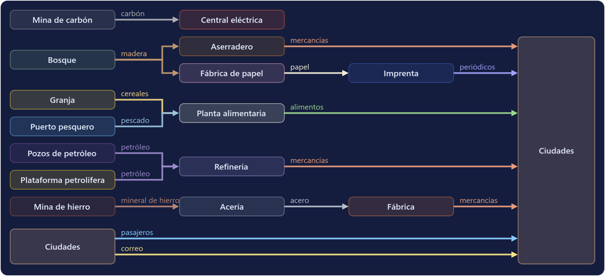
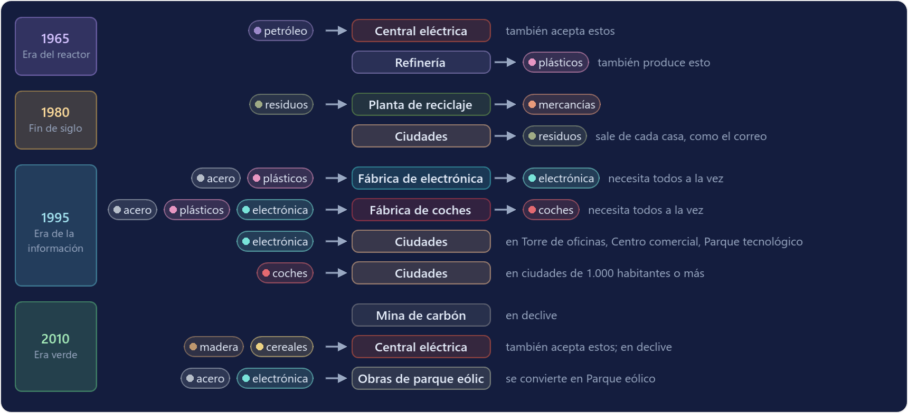

Cadenas industriales
Qué va adónde.
Las materias primas van a una planta que las convierte en algo que quieren las ciudades. Cada flecha es una entrega por la que cobras, así que una cadena entera paga más de una vez. Estas son las cadenas de una partida que empieza en 1950:


- Una planta convierte cada unidad que entregas en más o menos una unidad de producto, lista para recoger unos días después: más con la plantilla completa, menos con pocos trabajadores (ver Trabajadores).
- El carbón termina en la central eléctrica: de ella no sale nada.
- La madera tiene dos clientes: el aserradero la convierte en mercancías y la fábrica de papel, en papel para la imprenta, que está junto a una de las ciudades más grandes.
- Los periódicos envejecen al cabo de 2 días, así que llévalos rápido: los transportan camiones, pequeños trenes diésel y avionetas de correo. Los acepta cualquier casa de una ciudad de 150 habitantes o más.
- De vez en cuando una industria cambia su producción. Si se transporta la mayor parte de su carga, o tiene mucha plantilla, tiene muchas más probabilidades de crecer que de menguar.
- El Mapa del mundo (M) muestra dónde podría entregar cada industria de tu mapa.
Las eras cambian las cadenas
Cada era nueva trae industrias nuevas y da carga nueva a las antiguas. Un tipo nuevo de industria abre en el mapa al empezar su era (en una partida que empieza más tarde, ya está desde el principio).


- Dos materiales: la fábrica de electrónica necesita acero y plásticos a la vez. Guarda lo que traes hasta que llega lo otro, y cada tonelada de acero con una de plásticos da unas dos cajas de electrónica.
- Los residuos salen de cada casa de la zona de cobertura de una estación, igual que el correo. Una planta de reciclaje los convierte en mercancías.
- La electrónica se paga bien pero caduca en días: camiones rápidos, trenes o aviones de carga.
- Tres materiales: la fábrica de coches necesita acero, plásticos y electrónica a la vez, y cada juego de uno de cada da unos tres coches. Su ventana dice qué material la está frenando.
- Los coches se pagan bien pero abultan: solo los llevan el Atlas Car Transporter y los vagones portacoches, 10 por vagón. Las ciudades de 1.000 habitantes o más los aceptan.
- Las obras de parque eólico necesitan que se entreguen 1.000 toneladas de acero y 600 cajas de electrónica; cuando llega todo, la obra se convierte en un parque eólico. Las ciudades a menos de 24 casillas esperan entonces solo un 80% del tiempo entre tirón y tirón, y las empresas que entregaron se reparten hasta +25 de valoración con sus ayuntamientos, según lo que aportó cada una.
Aperturas y cierres
- Cada pocos años abre una industria nueva, de cualquier tipo que haya en el mapa: una mina, granja, bosque, pozo, plataforma o puerto donde quepa, una planta cerca de quien produce lo que acepta. Nunca se levanta sobre nada construido.
- Cuando una era trae un tipo nuevo de industria, abre una cada mes hasta que el mapa tiene las que le tocan.
- Una mina, granja o pozo al que nadie ha dado servicio en dos años, y cuya producción ha caído al 75% de lo habitual, puede pasar apuros. Los que tienen poca plantilla, los primeros.
- Las noticias avisan un año antes del cierre, y su ventana y su ficha dicen cuándo. Transporta su carga antes y no cerrará.
- Las plantas nunca cierran (salvo las centrales eléctricas, más abajo), ni tampoco la última industria de un tipo, así que todas las cadenas siguen siendo posibles.
- Las industrias en declive ya no abren. Desde 2010, una central eléctrica que nadie ha abastecido en dos años también puede tener problemas y cerrar.
- Cuando una cierra, las estaciones de al lado dejan de ofrecer su carga, y los rivales abandonan las líneas que la servían. Una plataforma petrolífera se lleva su muelle con ella.
Lo que produce cada industria está en Tabla de industrias.